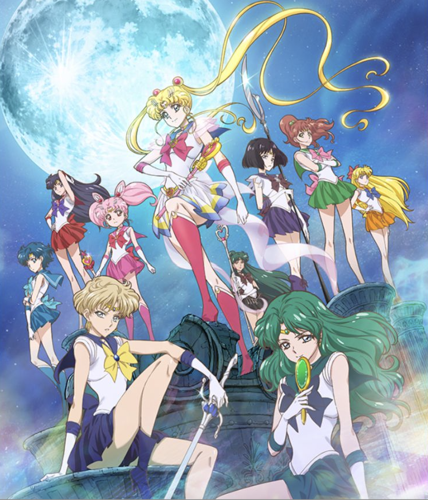
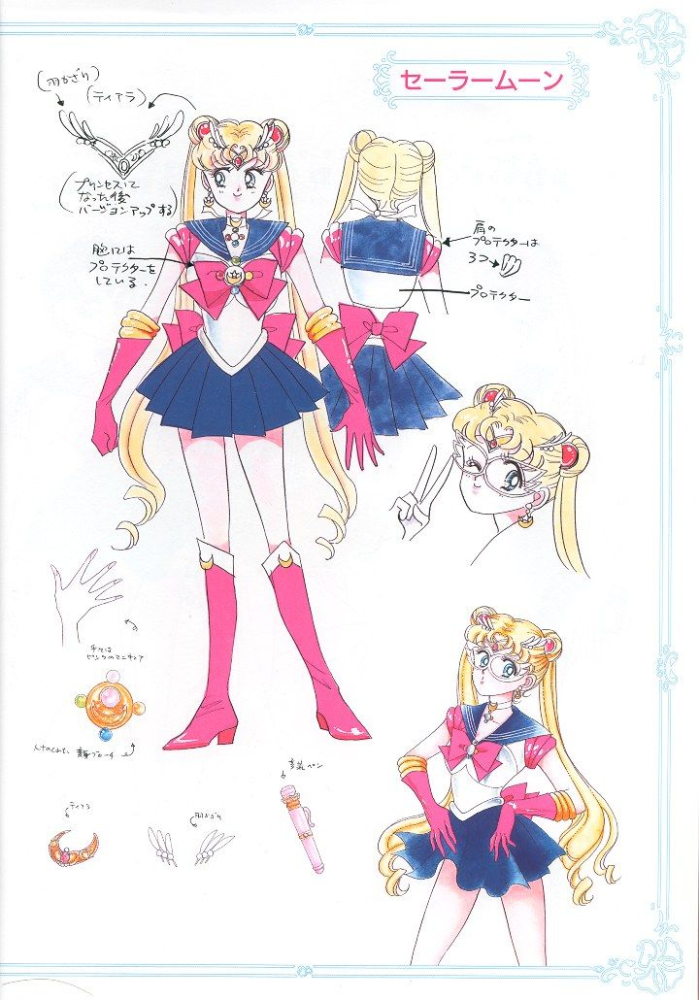
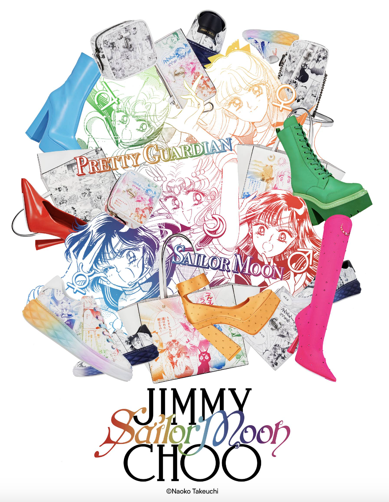

About

Sailor Moon is a story about Usagi Tsukino, a carefree and compassionate schoolgirl who transforms into Sailor Moon, a powerful warrior tasked with saving the Earth from evil forces. Along with her friends and teammates, the Sailor Guardians, each representing a different celestial body, Sailor Moon fights to protect the Earth using the legendary Silver Crystal. The series is known for its dramatic tone, which often leans into full-on melodrama to create captivating story beats. Despite its darker themes, Sailor Moon is also a story about love, friendship, compassion, and empathy which are central to the character of Usagi.
The series features a large cast of characters, each with their own unique personalities and abilities. In addition to Usagi, the main characters include Mamoru Chiba, Usagi's love interest who transforms into Tuxedo Mask, and the Sailor Guardians, including Sailor Mercury, Sailor Mars, Sailor Jupiter, and Sailor Venus. The series also features a variety of villains, including Queen Beryl and the Black Moon Clan. The characters are well-developed and have complex relationships with one another, which adds depth to the story. Despite being a magical girl series, Sailor Moon is known for its darker themes and complex characters, which have made it a beloved classic in the anime and manga world.

Production
The series was serialized in the monthly manga anthology Nakayoshi from December 1991 to February 1997. The anime adaptation of the series was directed by Junichi Sato and Kunihiko Ikuhara, with Kazuko Tadano and Ikuko Itoh as character designers. The series was produced by Toei Animation and aired from 1992 to 1997. The series has been praised for its unique animation style, character designs, and story development.
The production of Sailor Moon was inspired by Naoko Takeuchi's love for mythology, astrology, and the supernatural. The series features motifs of magical girls, romance, and adventure. The animation style of the series is characterized by its use of bright colors, detailed character designs, and fluid animation. The series has been adapted into various forms of media, including musicals, video games, and live-action adaptations. The popularity of the series has led to the creation of various merchandise, such as plushies, figures, and cosmetics. Sailor Moon has become a cultural phenomenon and has influenced a generation of anime and manga creators.
Cultural Impact

Sailor Moon has had a significant cultural impact on society, particularly in Japan and among anime fans worldwide. Sailor Moon is renowned for its positive portrayal of female empowerment. The characters in the series are strong, independent, and capable. The franchise is a celebration of femininity and has helped to break down gender stereotypes in anime and manga. Sailor Moon has been praised for its feminist themes and messages. The series has been described as a celebration empowering young women. The series centers on empowered young women who fight for justice and equality. The series has also been praised for its positive representation of LGBTQ+ characters and its handling of themes such as love, ambition, and personal growth.
Sailor Moon has had a profound impact on anime and manga culture. The series has inspired a generation of creators and has helped to shape the industry. The series has also had a significant impact on popular culture, with its characters and themes appearing in various forms of media, such as video games, musicals, and live-action adaptations. Sailor Moon has become a cultural icon and a symbol of female empowerment and feminism. The series has helped to break down gender stereotypes and has inspired young women to be strong, independent, and confident.